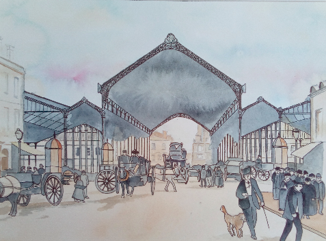

On a longtemps surnommé le marché des Capucins, « le ventre de Bordeaux » car de jour comme de nuit s’y négociaient les marchandises en gros ou au détail destinées à Bordeaux et à sa région. Lieu d’histoire et de paroles, il constitua longtemps un monde à part dans la ville avec ses figures, son langage et sa culture.
Alors que l’un des traits essentiels de Bordeaux dès le 1er siècle est l’importance du commerce, c’est au XVIII ème siècle que commence l’histoire du commerce dans le quartier des Capucins. Le nom du marché et du quartier est à l’origine, celui de l’ordre religieux des Capucins qui ont pour particularité vestimentaire, celle de porter un capuchon pointu appelé capuce, une robe brune, de marcher en sandales et de porter une longue barbe.
Cette congrégation de religieux mendiants, fondée en 1525 par Mathieu Bashi dans la ville de Spolète en Italie, était rattachée à l’ordre de Saint-François. Ordre des Capucins approuvé en 1536 par le pape Paul III. A la Révolution on recensera environ 400 maisons de Capucins.
Lou Gran Mercat …
Mentionné pour la première fois en 1354, Lou Gran Mercat, plus grand marché de toutes les places de la ville se tenait sur l’actuelle place « Fernand Lafargue » toute proche de l’Hôtel de Ville de l’époque.
A la fin du XVI ème siècle, le marché se décompose en trois bâtiments, un pour le commerce du pain, un pour le pilori où ont lieu les exécutions, le troisième est la clie, halle fermée par des claires-voies où on vend le poisson avec sur les côtés les bouchers, marchands de légumes et de poissons salés. Selon les anciens statuts de Bordeaux, les officiers de la ville, jurats et bourgeois y sont servis selon leur rang, le peuple a droit aux restes ….
{kind=link}